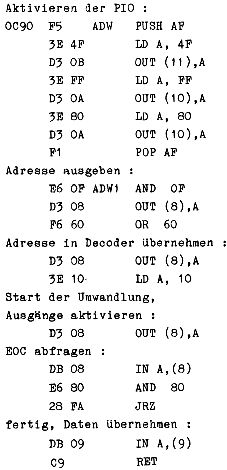
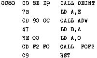
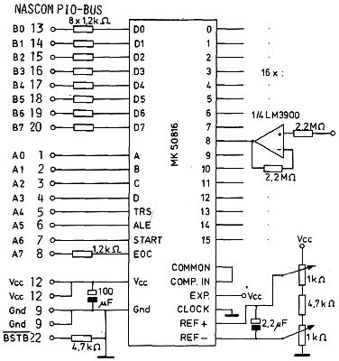

Nascom Journal |
Dezember 1981 · Ausgabe 11/12 |
digitalisierten Analogwert.
Die Umwandlungszeit beträgt 0,27 msec und wenn man die PIO-Aktivierung, die ja nur einmal durchlaufen werden muß, wegläßt und das Programm bei ADW1 aufruft, kann man die Zeit auf 0,24 msec verkürzen. Da die Digitalisierung sukzessiv erfolgt, ist die Zeit nicht vom Analogwert abhängig und damit konstant.
Zur Ansteuerung des A/D-Wandlers in BASIC (8K-ROM-Version) benötigt man noch folgendes Unterprogramm :
Das BASIC-Programm zur Datenerfassung sieht so aus :
. . . DOKE 4100,3200 X = USR(KN) . .
Im Laufe des Programmes muß einmal die Adresse des Benutzer-Unterprogrammes (0C80 = 3200 ) an das BASIC-Programm übergeben werden. Mit dem USR-Aufruf wird die A/D-Wandlung durchgeführt. Die Kanalnummer KN muß vor dem Aufruf einen Wert von 0 bis 15 haben und nach dem Aufruf enthält X den digitalisierten Wert der Analogspannung am Kanal KN. Die Umwandlung benötigt wegen des trägen BASIC-Interpreters 3 msec.
Ein Beispiel, wie man den A/D-Wandler an ein Z80-Bus-System anschließen kann, beschreibt R.D.Klein in seinem Buch Mikrocomputer Hard- und Softwarepraxis München 1981.
Bestückungsliste
| IC1 – IC4 | : | 4x LM3900 | R1 – R32 | : | 32x 2,2MΩ | |
| IC5 | : | MK 50816 | R33 – R40 | : | 8x 1,2kΩ | |
| C1 | : | 100nF Keramik | R41 | : | 1kΩ | |
| C2 u. C3 | : | 2x 2,2µF/ 16V Ta. | R42 u.R43 | : | 2x 4,7kΩ | |
| C4 | : | 100µF/ 20V Elko | 48x Schraubklemmen oder Lötnägel | |||
| P | : | 2x 1kΩ Trimmer stehend | 15x Drahtbrücken | |||

| Seite 30 von 55 |
|---|